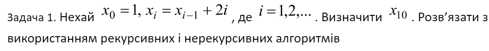
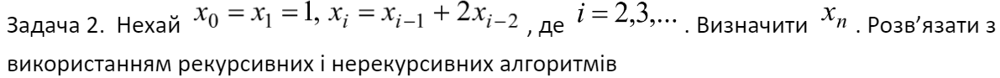

Урок 13
Обов'зкові завдання
-
Завдання 1

-
Завдання 2

-
Завдання 3
З використанням замикань розробити ітератор, тобто функцію, що буде поступово за окремими викликами видавати по одне значення від заданого мінімального до заданого максимального. Якщо значення досягне максимального, то наступним буде мінімальне значення. З використанням цієї функції реалізувати перебір номерів місяців.
-
Завдання 4
З використанням замикань розробити ітератор, тобто функцію, що буде поступово за окремими викликами видавати по одну букву наперед заданого слова. З використанням нього розробити гру «Прекладач». Виводимо для користувача опис цього слова і по одну букву користувач вводить переклад цього слова. Підрахувати кількість вгаданих букв.
-
Завдання 5
Тренажер додавання. Кожні 10 секунд користувачу задають випадковий приклад з додавання двох цифр і робиться перевірка.
-
Завдання 6
Через 20 секунд перейти на сайт ukr.net. Для цього через 20 секунд після відкриття треба виконати команду